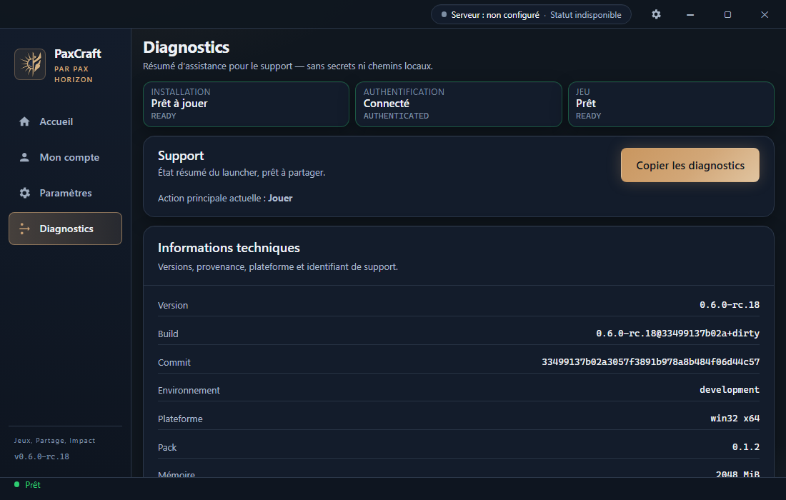
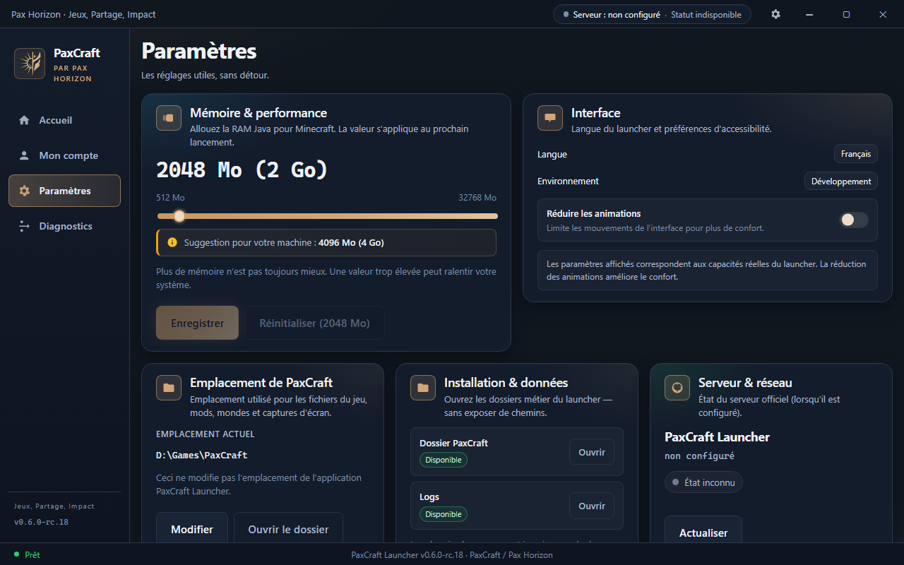

Diagnostics 1100×700 — cartes d’état densifiées

Paramètres après chooseLocation Dev → D:\\Games\\PaxCraft

Paramètres chemin Dev par défaut C:\\Dev\\PaxCraft
Viewport 1280×800 / narrow 1100×700 · Dev gateway · HEAD 33499137b02a3057f3891b978a8b484f06d44c57

